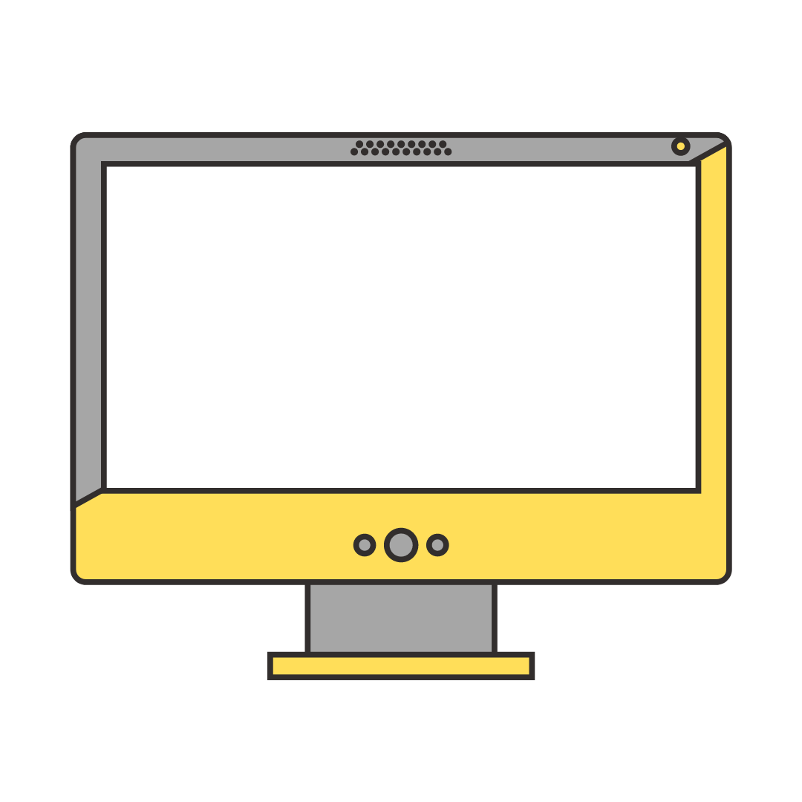
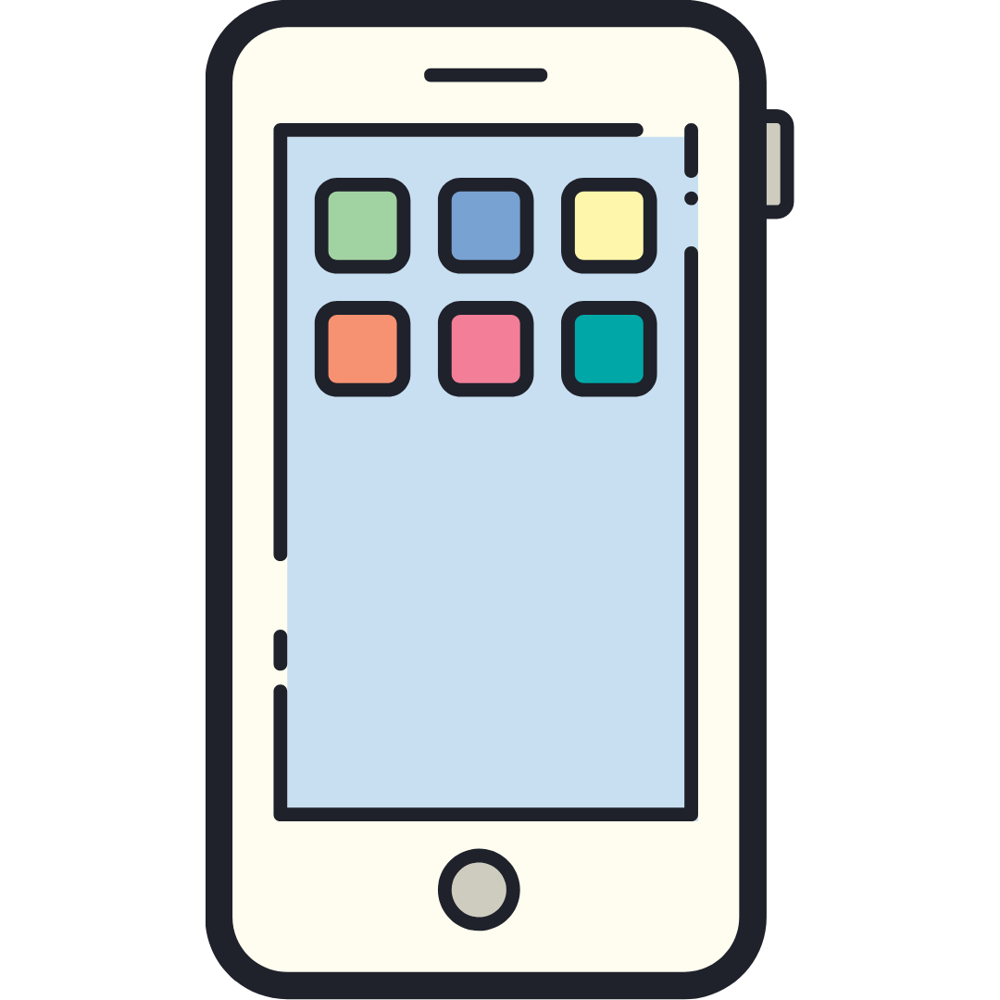

امـنـیـت رایـانـه
برای شهروندان
{ نرمافزار VPN }
ایرانسک
IranSecurity
IranSec
IranSec2
این محتوا با و تحت گواهی منتشر میشود (بیشتر بخوانید)
V2ray

تابستان ۱۴۰۲
- سعی کنید همواره از آخرین نسخه نرمافزار استفاده کنید تا روشهای جدید عبور از فیلترینگ را پوشش دهد.
- بهجای V2ray میتوان از هر نرمافزار مشابه دیگری نیز استفاده کرد.
نصب روی کامپیوتر
به آدرس https://github.com/2dust/v2rayn/releases بروید. در این آدرس نسخههای مختلف V2ray قابل مشاهده است. نسخهای را انتخاب کنید که جلوی آن برچسب Latest باشد.
روی فایل مناسب خود کلیک و آن را دانلود کنید.
فایل را از حالت فشرده خارج کرده و روی V2ray.exe (که آیکن V2ray را دارد) کلیک کنید تا اجرا شود. (این نرمافزار نیاز به نصب ندارد؛ میتوانید برای سادگی استفاده آن را به دسکتاپ خود اضافه کنید.)
اگر هنگام اجرا از شما اجازه نصب نرمافزار NET. را خواست، با کلیک روی دکمه Yes آن را قبول کنید. نرمافزار بهطور خودکار دانلود میشود. کافی است آن را نصب و V2ray.exe را دوباره اجرا کنید.
برای تغییر زبان، از منوی بالای صفحه، روی سه نقطه بالای صفحه کلیک کنید.
روی آخرین گرینه کلیک و زبان دلخواه خود را انتخاب کنید.
ممکن است برای اعمال تنظیمات نیاز باشد یک بار برنامه را بسته و مجدد وارد شوید. روی آیکن V2ray در پایین صفحه راست-کلیک کنید. (ممکن است در Hidden Icons باشد.) و روی Exit (آخرین گرینه) کلیک کنید.
نحوه استفاده در کامپیوتر
لینک (config)های مربوط به VPN را کپی کرده و وارد برنامه شوید. میتوانید با استفاده از Ctrl+V آنها را در برنامه وارد کنید. روش دیگر آن است که از منوی بالای صفحه روی Servers کلیک کنید.
گزینه Import bulk URL from Clipboard (Ctrl+V) را انتخاب کنید. حالا لیست لینکها را در برنامه مشاهده میکنید.
درصورتی که چندین لینک دارید، برای استفاده بهتر، روی مثلث کوچک گوشه بالا-چپ جدول کلیک کنید و سپس Ctrl+O را بزنید.
حالا روی ستون Delay(ms) جدول کلیک کنید تا لینکها به ترتیب سرعت برای شما مرتب شوند. با کلیک + Enter روی هرکدام، به آن متصل میشوید.
برای اتصال/عدم اتصال دستگاه به VPN، روی System proxy در پایین صفحه کلیک کنید.
برای اتصال از Set system proxy و برای قطع اتصال از Clear system proxy استفاده کنید.
نحوه استفاده در تلفن همراه
لینک (config)های مربوط به VPN را کپی کرده و وارد برنامه شوید. روی علامت + بالای صفحه بزنید و Import from clipboard را انتخاب کنید تا لینکها در برنامه نمایش دادهشوند.
درصورتی که چندین لینک دارید، برای استفاده بهتر، دوباره روی سه نقطه بالای صفحه بزنید و Tcping all configuration را انتخاب کنید. بار دیگر روی سه نقطه زده و Sorting by test result را انتخاب کنید که به ترتیب سرعت برای شما مرتب شوند.
با انتخاب هر لینک به آن وصل میشوید. برای اتصال دستگاه به VPN نیز روی دکمه گرد پایین صفحه بزنید تا روشن شود. (رنگ آن عوض شود.)
افزودن Subscription
روی منوی همبرگری گوشه صفحه بزنید و وارد Subscription group setting شوید.
از بالای صفحه روی + کلیک کنید و در بخش Optional URL لینک اشتراک خود را وارد کنید. نام دلخواهتان را در بخش remarks وارد و تنظیمات را ذخیره کنید.
در صفحه اصلی روی سه نقطه بالای صفحه بزنید و گزینه Update subscription را انتخاب کنید تا لینکها بهروز شوند. حالا طبق مراحلی که در بخش قبل گفتهشد، انتخاب کنید که به کدامیک متصل شوید.
نیاز به کمک دارید؟
پرسشهای خود را با ما در میان بگذارید. support@iransec.org t.me/IranSec_Botحق مؤلف و تشکر
این نوشته بهواسطه تجربۀ چندساله در ارائه مشاورۀ امنیتی به سازمانها، کنشگران مدنی، روزنامهنگاران و شهروندان تهیه شده است. هرچند که تمام تلاشمان را کردهایم که متن حاضر بهروز و بینقص باشد، اما امکان ایراد وجود دارد. پس با آغوش باز پذیرای نقدها و پیشنهادها شما هستیم. لازم است یادآوری کنم که این جزوهی امنیتی با گواهی کریتو کامنز (قابل استفادهی غیرتجاری، تخصیص و سهم یکسان) منتشر شده است. به حتم برای هر شکل از استفادهی تجاری از این مجموعه نیاز به کسب اجازه است.
در این پروژۀ آموزشی از محتوای دیگران با گواهی قابلانتشار و تغییر استفاده شده است. از آن جمله میتوان به ارائهگر reveal.js، قلمهای لالهزار و وزیر و بی-یکان، شکلکهای ion و awesome و flat icons استفاده شده. در هر جای پروژه که عکسی استفاده شده منبع آن ذکر شده است. اگر منبعی از قلم افتاده است خوشحال میشویم که آن را گوشزد کنید.